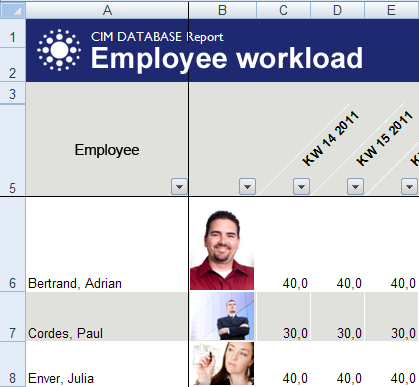

Creating report templates¶
New reports are created supported by the Excel link in three steps:
Selecting data sources
The data source is selected using the link function [ Select data source ].
A dialog is displayed for selecting a data source configured in the system.
Excel: PowerReports - selection dialog for data sources
Establish data connection and design layout
After selecting the data source, the associated XSD schema is loaded and displayed. The XSD schema is used to establish the data connection. The data connection is established by dragging and dropping schema elements to the desired position in the Excel sheet. Here, you can position individual attributes as well as complete objects at once.
Excel: PowerReports - Establishing data connection using drag and drop
Save document as a report template
Finally, the newly created report has to be saved as a report template for the data source. You can do so using the link function [ Create template ].
Report templates are attached in the system to the respective report directly as files. Here, you can create multiple language-specific templates for one and the same report (see Creating language-specific reports).
Note
Since report templates are not created as separate documents but are rather directly attached to the reports, report templates cannot be opened later via the [ Load ] function of the link for re-editing. You can open for re-editing either in the client (e.g. in the project overview) or after running a report via the [ Edit template ] function.
After successfully creating the file, the report template is assigned to the data source automatically. The report can then be called up immediately. Depending on the data source, this can be done context-free or in the pop-up menu of a corresponding object for the report creator.
All reports created for a data source are listed in the reports folder of a data source. There, you can adjust the authorizations, the title of the report and, if applicable, a preceding dialog. As an example, figure 32 shows the project portfolio report for the data source of the same name. Any number of reports with varying characteristics and in any of the different language versions can be created for a data source.
Excel: PowerReports - Report for data source
The report title and a preceding dialog, if applicable, can be configured in the data sheet for assigning a template to the data source. The
Authorizationstab controls the visibility of reports in the report selection dialog. The report creator is authorized automatically by a corresponding assignment upon creation. Other users can call up the report only after they have also become authorized by a role assignment or by direct personal assignment.Furthermore, various additional settings for the type of the report generation and its layout can be configured in the data sheet (see Selection configuration).
Creating report dialogs¶
A report can be optionally preceded by a dialog that asks the user to set parameters that can be forwarded to the data providers when calling up a report and influence the data retrieval there. This always useful if users are to be able to influence the report result by making their own entries. For example, by entering a time period to be considered or other filtering condition in combination with SimpleQuery data providers.
Excel: PowerReports - report dialog for querying projects
The parameters are addressed to data providers by naming conventions for the attribute names of the mask fields: <Providername>-<Attributname>, where the attribute names must not contain any capital letters. The relation field of the mask field configuration remains empty.
Excel: PowerReports - addressing the dialog fields to data provider as parameters
The options for setting parameters of the universal standard providers using dialogs can be found in Types of providers in detail for the respective provider type.
Note
If fields are changed, deleted or added in the report dialogs, note that the XML schema has to be updated in the report templates that use the respective dialog.
Moreover, each dialog can be supplemented by the option to save all presettings. This can be used to potentially prevent repeated entries when re-running reports. To achieve this, you must add three elements to the dialog in question: the 2 (hidden, but which identify the respective report) text fields cdbxml_source_name and cdbxml_report_title; 1 button which triggers the component cdbxml_set_defaults when pushed (see Excel: PowerReports - Saving the entry values of report dialogs).

Excel: PowerReports - Saving the entry values of report dialogs
Displaying hierarchical data¶
In PowerReports, data organized in a hierarchical manner can be displayed accordingly. Typical examples of hierarchical data are product structures or task structures.
A prerequisite for the hierarchical representation is that the data provider provides the hierarchy information in the attribute cdbxml_level. If this prerequisite is met, the hierarchy levels can be expanded or collapsed in the PowerReport and color-coded and indented for a better overview.
To create a list organized in a hierarchical manner, the attribute cdbxml_level must be contained in the list. Ideally, this attribute is appended to the end of the header and set as invisible after completing the layout work by setting the column width to 0. If the attribute cdbxml_level is contained in the list, the results table is structured automatically using Excel functions, as illustrated in the figure below in the left edge.

Excel: PowerReports - hierarchical representation using the product structure as an example
This organization can be additionally highlighted by indenting any column and by color-coding. For this purpose, you have to add a specific expression in each of the column labels of the cdbxml_level attribute. The expressions have to be separated from each other by a colon. Indentation of a column:
indent(column)
Color coding:
colorize(<rgb_start_color>),(<rgb_offset>)
column specifies the column index in which the indentations are to be carried out.
rgb_start_color specifies the start color as a RGB color code for the hierarchy level 0. For the levels below that, the row color is determined by adding the rgb_offsets.
Excel: PowerReports - hierarchical representation with indentation of the first column and color coding
Only indentation of the 1st column:
level:indent(1)
Indentation of the 1st column + blue color coding:
level:colorize(230,230,255),(20,15,12):indent(1)
The expression level:colorize(230,230,255),(20,15,12):indent(1), for example, results in the following representation.
Excel: PowerReports - hierarchical representation with indentation of the first column and color coding
Note
Groupings with the setting ‘Main rows below detail data’ are displayed in Excel by default. However, the user usually prefers them above the detail data, as shown in the example above. Therefore, make sure that this setting is disabled when creating the PowerReport template ().

Excel: PowerReports - hierarchical representation - grouping settings
Displaying dynamic column titles in lists¶
In PowerReports, you have the option to dynamically assign values to the column titles of lists that are filled by providers. The PowerReport is used as an example:

Excel: PowerReports - displaying dynamic column titles
This PowerReport for displaying the employee workload shows a time period specified by the user before generating in a list. Afterwards, the time period can be changed in the field highlighted in red and the PowerReport can be updated. This makes the column titles dependent on the time period since they display the respective calendar weeks. This is implemented by adding an additional provider (‘PersonnelLoadWeekly_Label’), which provides the current column titles each time a PowerReport is created/updated. You have to place the values in the row directly above the list so that the Excel link can find, export and commit them to the list. Upon completion, this row must be hidden in the template.
Excel: PowerReports - displaying dynamic column titles (Layout)
Displaying dynamic image contents¶
In PowerReports, you have the option to fill both simple fields as well as list fields with image files (in all formats supported by Excel). Section Adding image files describes which images you can provide and how you can provide them. A corresponding sample image must be inserted in the report template so that the image files dynamically loaded when generating a report are correctly inserted resp. receive a desired uniform size or position within the cell. Either the image name has to start with “cdb_image” or the attribute name assigned to the associated field by the data provider has to start with “cdbxml_image” so that this image can be recognized by the link as a sample. Furthermore, certain formatting rules in the alternative text box can be defined in the properties dialog of the respective image.
Important
The upper left corner of the sample image has to be definitely placed into the regarding cell, else Excel links the image to another cell and the dynamic image content possibly won’t get inserted at all.
In some cases there are unexpected results in lists with dynamic image content (e.g. distorted or invisible content). Currently this mainly effects Excel 2010 and usually can be avoided by arranging the sample image inside of the cell, so that it (resp. the dynamic image content later on) does not exceed the cell borders. If a PowerReport is intentionally designed in a way so that the user might wish to filter or sort a list which contains dynamic image content, then the regarding sample images have to be formatted with the property “Move and size with cells”, else list row movements caused by filtering or sorting might result in wrong image positions.
Important
Dynamic image contents are not currently supported in complex reports.
Formatting options:
KeepWidth: The width of the sample image is transfered to the dynamic image content. This variable is activated internally by default since keeping the column width is usually desired.
KeepHeight: The height of the sample image is transfered to the dynamic image content.
MinBorderHeight: The minimum distance between image height and cell height. For example, a value of “1” guarantees that the respective row height is enlarged when filling images that are too tall. This prevents overlapping image contents. Higher values such as “20” or “30” provide a visual border between the image and the cell.
MinBorderWidth: The minimum distance between image width and cell width.
CenterWidth: The dynamic image content is centered horizontally within the cell.
CenterHeight: The dynamic image content is centered vertically within the cell.
Important
The entire formatting text must begin with the prefix “cdb:”.
Excel: PowerReports - dynamic image contents (sample image)
Formatting example 1: “cdb:KeepHeight=1,CenterWidth=1”
Excel: PowerReports - dynamic image contents (example 1)
Formatting example 2: “cdb:MinBorderHeight=1,KeepWidth=1”
Excel: PowerReports - dynamic image contents (example 2)
Displaying complex rows for multi-export data sources¶
Microsoft Excel does not allow lists consisting of more complex rows to be created. A list row always consists of only one row of Excel cells. However, displaying more complex data in list form is often required. The following display of a part list, each with a list of the assigned documents, cannot be implemented with Excel lists alone, for example. Instead, you have to create these types of lists by joining a layout that repeats itself. This type of complex list element is indicated in red in the figure below. This element repeats as frequently as desired. This is done to form a complex list.
Excel: PowerReports - Complex rows using a part list as an example
The layout and data connection for a complex list element has to occur on a special template sheet with the fixed name cdb_template. Only one complex row is implemented on the template sheet.
When running reports, the complex rows of a data source are exported in individual XML files. They are then imported into the template sheet individually using the Excel link. Between the import processes, the result from the template sheet is copied to the target sheet.
Excel: PowerReports - Definition of a complex row
The target sheet and a target cell can be specified in the top left cell of the template sheet. This target address describes the target for the top left cell of the first complex cell to be copied. All other rows are attached to each other starting there. If no target address is specified, the top left cell of the first sheet contained in the workbook is used as a starting cell.
The PowerReports Framework automatically identifies data that has to be imported and exported as complex rows based on the result and call cardinalities of linked data providers.
A multi-export configuration exists whenever the higher-level provider provides a list as a result (result cardinality N) and if an assigned subprovider has the call cardinality 1. Thus, the subprovider provides data that relates to individual list elements of the higher-level provider.
Excel: PowerReports - schema for multi-export
For example, if a SimpleQuery provider provides a list of parts and a relationship provider provides the assigned documents as an assigned subprovider, a configuration exists that can only be displayed as a complex list in Excel.
An assigned GroupBy provider, on the other hand, would not represent a multi-export configuration since GroupBy providers are called up with the entire result of the higher-level provider, i.e. have the call cardinality N. GroupBy providers do not provide results that relate to individual list elements of the parent provider, but rather aggregated information that relates exclusively to the entire list.
Displaying longtexts¶
For rows where cells are only or sometimes filled with longtexts, the property line break ” of the complete row has to be set so that the link recognizes this and can adjust its row height automatically.
If longtexts are to be shown in cells consisting of multiple composite cells, the correct display can only be achieved via a detour:
The actual link with the longtext attribute of the data source must not occur with the desired target cell, but rather with a hidden cell at the end located in the same row.
So that the longtexts are not displayed as cut off with empty rows at the beginning, this helper cell must have the same width.
The “line break ” property has to be set for the entire row.
Re-editing finished PowerReports using VBA¶
Sometimes, you might want to carry out certain programming tasks using VBA and the Excel object model after a report has been completed by the link (e.g. to format filled diagrams correctly or put the focus on something). For this purpose, the link searches for a VBA function with a certain name in the Excel workbook. If it is found, it is called up each time after completing/updating a report.
Adding a VBA function for automated re-editing of finished PowerReports
Open the VBA editor in Excel.
Insert a module in the PowerReport template.
Integrate a function with the name ‘CDBReportDone’:
Public Sub CDBReportDone()
' ...
End Sub
Note
If the security settings in Office are set to automatically disable macros which are not digitally signed, then the report templates must be signed with a certificate before they are stored in the system. The standard PowerReports supplied with the system, which contain VBA code for post-processing, are already signed with a Contact GmbH certificate and under usage of a timestamp server. In order to sign custom report templates or modified standard report templates with an own certificate and under usage of a timestamp server, following registry entries must be manually set, since it is not possible to configure a certificate timestamp server via the Office interface:
Windows Registry Editor Version 5.00
[HKEY_CURRENT_USER\Software\Microsoft\VBA\Security]
"TimeStampURL"="http://timestamp.some-ca.com/scripts/timestamp.dll"
"TimeStampRetryCount"=dword:00000005
"TimeStampRetryDelay"=dword:00000005
If the digital signing is proceeded without a timestamp, then the validity of the signature expires after the expiry of the certificate. By using a timestamp the signature is valid without any time limitation.
Creating personal reports¶
Users have the option to modify the layout and data connection of a called up report directly and save it as a personal report. Thus, a personal report can be created spontaneously if the user is not pleased with report result or if it is not suitable for his/her purposes.
The modified report is saved as a personal report with the Excel link function Create . The modified report is created by calling up this function as a new report template for the underlying data source and authorized for the user implementing this. Other users do not have access to this report, but could become authorized later by the administrator via role and personnel assignments.
Excel: PowerReports - Personal report using employee workload as an example
When creating a personal report, the preceding report dialog, if present, is taken over by the original report. The change of the report dialog is not provided by the user.
Creating language-specific reports¶
The designer of a PowerReport has the option to adapt an existing report template for a certain language and then provide it for the same higher-level report so that the users running the report later can choose between the different languages. If you open an already created report template for editing and run [ Create template ] later, the link, in an intermediate dialog, offers to create a language-specific report template for already existing reports.
Excel: PowerReports - Report for data source
In the dialog following this, you only have to select the language and a unique title.
Excel: PowerReports - Report for data source
Special notes¶
When linking between list attributes of a provider scheme and the Excel cells, i.e. if table columns develop due to the linking in the sheet, you have to take particular care that the respective table is set up as a whole in a logical sequence from left to right. If columns are deleted or inserted from this table later, this can cause the report generation to have errors or even be aborted in some cases, since the columns potentially no longer form an entire table in this case, but rather multiple tables next to each other. You can tell whether a table consists of multiple tables by the small triangles on the bottom right edge of each table. Especially since Excel 2010, this has been giving users problems that can only be solved by removing tables and setting up new ones.
Filling data in composite cells can cause unexpected malfunctions. In these cases, you can use the option “Text alignment > Horizontal > Center via selection” instead of the “Combine cells” option.
For cells preconfigured with date formats or user-defined number formats, the option “Line break” must not be set at the same time since this can lead to a loss of the formatting.
When linking between a schema attribute and a cell, Excel formats the cell automatically with the number category that fits the respective attribute value type. Since now, cells that are to be filled with floating points later are assigned the number category ‘standard’ by Excel automatically, potential decimal places are only displayed if they do not equal zero. If a fixed decimal place format (0.00) is desired, you have to change the number category according to the link in ‘Number’.
A lower table must never be wider than the table(s) above it if multiple dynamically filled tables are used on top of each other in any sheet. Thus, it may only be as wide or, of course, narrower since internal problems will be caused otherwise, which would cancel the report generation as a result. If lower tables have to be wider based on their design, the higher tables have to be broadened, for example, by using invisible dummy columns.